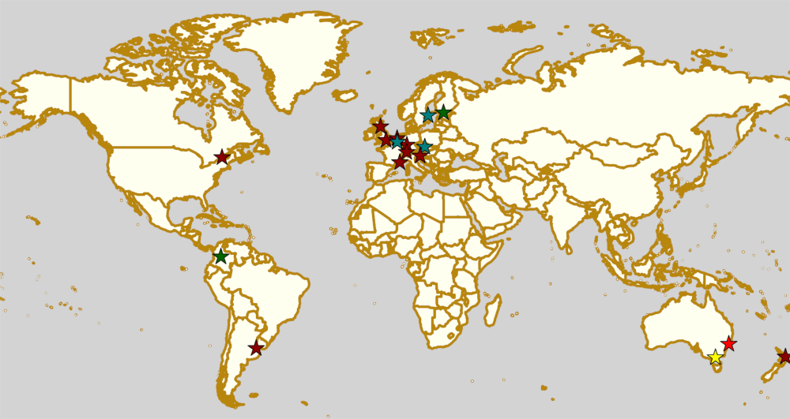

Weekend Highlights: 15 June 2019
This weekend's highlights are back to our two update format (partly because of the density of events in the UK and France, so we want to give more time to breathe).
The rules are, as usual: highlights limited to 1 event per country, with an "extra" event allowed for a different kind of fixture (so, 1 tournament and 1 bootcamp), or if they involve Scottish leagues (since we are the Scottish Roller Derby Blog). Other notability might also allow the extra event - great posters, notable teams, etc. (League birthdays may count as "special" enough, at our discretion ;) )
The Scottish clause here gives us two updates for the UK, one in Scotland and one down south! Meanwhile, in general, this is obviously a weekend for bootcamps, with 3 of them in Europe, and two of those full weekend events!
In a bid to make this list as useful as possible, we've avoided links to Facebook except where noted. (Links to Teams are to non-Facebook resources - Instagram, or actual team pages - we'd strongly recommend that Teams get themselves an actual webpage [we can help host one if you need help]).
Locations are roughly organised East-West (with things before the weekend out sequence at the start).
Sat: Whakatāne, New Zealand
Whakatāne Roller Derby host a single header event as part of this year's Top 10 NZ Roller Derby Championships series.
- Brawl Stars (Whakatāne) versus Pirate City Rollers All-Stars (Auckland)
Event starts: 1600 Saturday (doors open)
Venue: Whakatāne War Memorial Hall, 7 Short Street, Whakatāne, New Zealand
Sat: Newcastle, NSW, Australia
Newcastle Roller Derby League is hosting a pretty unique fundraiser: they're hosting an art exhibition of digital portraits of each member (skaters and bench staff) of their Dockyard Dames (A team), each created, and signed, by Sammi Jurd. Each and every 40x50cm portrait will then be auctioned off to the highest bidder!
Event starts: 1830 Saturday
Venue: Newcastle ArtSpace, 91 Chinchen Street, Tighes Hill, Newcastle, NSW, Australia
Sat: Lardner, VIC, Australia
Gippsland Ranges Roller Derby host the first ever Gippsland Pride Cup, in association with Pride Cup Australia. As well as an exhibition bout against the Australian trans-and-gender-diverse exhibition team, the Gender Ending Story (who also have one of the best team names in the sport), the event will also feature an Open-to-All genders low-contact scrimmage to start. (And the usual stalls, events and other ancillary features.)
- Low contact rules scrimmage (OTA) (20 min periods)
- Gippsland Ranges versus Gender Ending Story (trans and gender-diverse exhibition team)
Event starts: 0900 Saturday ("doors open")
Venue: Lardner Park, 155 Burnt Store Road, Lardner, VIC, Australia
Sat-Sun: Helsinki, Finland
Helsinki Coast Quads host the return of their tendency to host end-of-season scrimmage events with knowingly silly themes. This time, they're memorialising the retirement of a certain Not-Safe-For-Work derby name, but we think this is probably just an excuse for a scrimmage followed by a sauna.
Event starts: 1400 Saturday
Venue: Viikin Monitoimitalo, Maakaari 3, Helsinki, Finland
Sat-Sun: Stockholm, Sweden
Stockholm Roller Derby host a 2-day bootcamp, aimed at intermediate (1 year experience post mins), open to WFTDA-gender-policy conforming skaters. Coaches are drawn from Stockholm All-Stars' packed roster, and include: Thunder (one-on-one blocking), Party-O ("Spin-to-Win" for jammers), Slinky (working the outside line for jammers), Chaos (aggressive blocking), Maurine (transitions and backward skating for jammers), Foxen ("The Tripod puzzle" for blockers).
Event starts: 1100 Saturday
Venue: Vallentuna Ishall B-hallen, Parkvägen 3, Vallentuna, Sweden
Sat: Brno, Czech Republic
Roller Derby Brno Freakshow host a bootcamp in the east of the Czech Republic, coached by Dublin Roller Derby's MuFasta (coach for Dublin C), and Holo-Whip. This is a post-min-skills intro to intermediate bootcamp, Open To All genders. As usual, it will end with a scrimmage for everyone to practice what they've learned.
Event starts: 0900 Saturday
Venue: Jana Babáka 5, Brno, Czech Republic
Sat-Sun: Ljubljana, Slovenia
[FACEBOOK LINK] [FACEBOOK LINK (BOUT)] [FTS LINK]
Roller Derby Ljubljana are part of the Ljubljana Pride series of events, starting this week, with two events on Saturday. Firstly, they will be part of an open round table on "The Role of Roller Derby in the Queer Community", where they'll be joined by representatives from Grenoble's Cannibal Marmots. They'll then go on to play the Cannibal Marmots in a free open bout as part of the Pride Parade.
- Round Table Discussion
- Roller Derby Ljubljana versus Cannibal Marmots Bééé (Grenoble B)
Event starts: 1730 Saturday (round table), 1900 Saturday (bout)
Venue: Športno društvo GIB, Drenikova 32, Ljubljana, Slovenia
Sat-Sun: Darmstadt, Germany
[FACEBOOK LINK] [FTS LINK 1] [FTS LINK Bundesliga D2] [FTS LINK Bundesliga D1]
Riot Rollers Darmstadt host a whole weekend of Roller Derby, with 5 games across Saturday and Sunday. Of these, there's even a Bundesliga D1 bout, as Darmstadt play Dresden, and a Bundesliga D2 game as Bembel Town play Cologne!
- Saturday:
- Dresden Pioneers (Dresden A) versus Namur Roller Girls
- Bembel Town Rollergirls (Frankfurt) versus Cologne Roller Derby [Bundesliga D2]
- Riot Rollers A versus Dresden Pioneers [Bundesliga D1]
- Sunday:
- Riot Rollers B versus Köln Mixed team
- Roller Grrrl Gang (Frankfurt) versus Mixed Team
Sunday games are not listed on FTS as one team is unrateable.
Event starts: 1500 Saturday (doors open)
Venue: LZZ Darmstadt, Kranichsteiner St 86, Darmstadt, Germany
Sat-Sun: Zurich, Switzerland
[FACEBOOK LINK] [FTS LINK 1] [FTS LINK 2]
Zürich City Roller Derby host an international double header of Roller Derby, facing teams from Sweden and England!
- AllstarZ (Zürich A) versus The Royal Army (Royal Swedish A | Stockholm )
- BruiseZ (Zürich B) versus Hellfire Harlots B (Nottingham)
Event starts: 1500 Saturday (doors open)
Venue: Sportanlage Fronwald, Fronwaldstrasse, Zürich, Switzerland
Sat: The Hague, Netherlands
[FACEBOOK LINK] [FTS LINK 1] [FTS LINK 2]
Parliament of Pain end their season with a triple header of Roller Derby. This is particularly exciting, as it includes an OTA gender policy bout!
- Aces of Pain (PoP O | The Hague) versus One Hit Wonders (Suck City O | Breda)
- Queens of PoP (PoP A) versus Holy Wheels Menace (Liège A)
- Mysterious third bout
Event starts: 1300 Saturday (doors open)
Venue: Oranjeplein, Slicherstraat 11, The Hague, Netherlands
Sat-sequence: Brussels, Belgium
Brussels Roller Derby League host a two-day bootcamp-and-scrimmage weekend, with an evolving schedule. The Saturday beginners skater bootcamp is coached by: Hell Freya, Mardisturbia, Bundy Nelson (Team Belgium + Brussels A) and Meta Cagole (Brussels A), plus Kenny Jean coaching off-skates sessions. The Sunday is a day of various scrimmage events, including "Special rules" games - and a sneak-preview of Brussels' new C team! The entire event is to raise money for Brussels Derby Pixies' trip to California for the Deep Blue Derby Tournament in September.
- Saturday:
- Bootcamp (Mins-passed Skaters, Referees and NSOs)
- Sunday:
- Beginners mins-passed scrimmage versus Brussels C
- Brussels A/B versus The World (short-format scrimmage with fun rules)
- Three team round robin tournament scrimmage.
Event starts: 0900 Saturday (bootcamp)
Venue: Unknown, Brussels, Belgium
Sat-Sun: Pertuis, France
[FACEBOOK LINK] [FTS LINK (pending details from organisers)]
Marseille Roller Derby Club host "Paca l'eau, bientôt la bagarre", a "Regional Tournament" for the teams of Provence-Alpes-Côte d'Azur. Thank you to Lise Bonvalot for help with the schedule here.
- Teams involved:
- Les Amazones (Pays d'Aix)
- "Les Morues du Sud" (Nice Roller Derby/Sisters in Arms (Gap)/Toxic Ladies (Toulon))
- Mars Invaders: Marseille Roller Derby Club
- Rabbit Skulls B (Avignon B)
- Rolling Castagne: Roller Derby Club Bastiacciu (Bastia)
- Schedule (Sat - 30 min, single period games)
- Nice/Toulon/Gap versus Avignon
- Marseille versus Aix
- Nice/Toulon/Gap versus Bastia
- Avignon versus Aix
- Bastia versus Marseille
- Aix versus Nice/Toulon/Gap
- Avignon versus Marseille
- Aix versus Bastia
- Schedule (Sun - 30 min single period, unless noted)
- Marseille versus Nice/Toulon/Gap
- Bastia versus Avignon
- 3rd Place game : 3eme versus 4eme (2 x 30 min)
- Men's open subscription game (2 x 20 min)
- artistic roller skating demo
- Final : 2eme versus 1er (2 x 30 min)
Event starts: 0915 Saturday (doors open)
Venue: "Stade Verdun" Pertuis, Avenue de Verdun, Pertuis, France
Sat: Windsor, UK
Royal Windsor Roller Derby host a single header just for Glasgow Roller Derby. (The two teams last played back in 2016, when Glasgow hosted, and managed a close win - there's been a bit of change for both teams since, so this return bout will be interesting.)
Event starts: 1600 Saturday (doors open)
Venue: Windsor Leisure Centre, Clewer Mead, Stovell Rd, Windsor, UK
Sat-Sun: Dalkeith, Scotland
[FACEBOOK LINK] [FTS LINK 1] [FTS LINK 2] [FTS LINK 3] [FTS LINK 4]
Auld Reekie Roller Derby host a Summer Tournament over this weekendm with a bunch of international and national bouts. With teams from the UK, Sweden, and within Scotland itself, and a rookie game.
- Saturday:
- Birmingham Blitz Dames versus Auld Reekie All Stars (Edinburgh A)
- New Skaters Debut Game
- Gothenburg Roller Derby versus Birmingham Blitz Dames
- Sunday:
- ASTROs (Edinburgh C) versus Bonnie Colliders (Dundee B)
- Auld Reekie All Stars versus Gothenburg
New Skaters game is not listed in FTS, as the teams are not rateable
Event starts: 1030 Saturday (doors open)
Venue: Dalkeith Community Campus, 4 Cousland Road, Dalkeith, Scotland
Sat: Buenos Aires, Argentina
2x4 Roller Derby host a double header of scrimmage, with both B/C level WFTDA-gender policy, and ABC level "mixed" (Open To All) options. This scrimmage raises funds for 2x4 Team C to attend the second edition of the Impakto Mixto tournament in La Rioja in July.
- BC level WFTDA-policy scrimmage
- ABC level OTA scrimmage
Event starts: 1500 Saturday (first game)
Venue: Curapaligüe 1406, Buenos Aires, Argentina
Sat: Bogotá, Colombia
Rock N Roller Queens [link to Facebook, as website link down] and Combativas Revoltosas are just one of the skating-related clubs participating in the 3rd annual Fiesta Roller Dance Bogotá, a celebration of all kinds of skates-related things in the city. (This edition is branding itself as "Urban", so we expect a different focus to previous editions.)
Event starts: 1800 Saturday
Venue: La k-zona Galería Comercial Cultural, Calle 15 # 9-64, Bogotá, Colombia
Sat-Sun: Queretaro, Mexico
[FACEBOOK LINK] [FTS LINK (pending actual details)]
Rock City Roller Derby (previously known as Queretaro Roller Derby) are hosting a "cuadrangular" tournament against their neighbours in central Mexico. Given this is a two day event, we'd imagine it's a full round robin, with 6 games in total. At present, "La Mala Copa" has no complete announced schedule, but we know teams are:
- Teams:
- Rock City Roller Derby (Queretaro)
- Minervas Roller Derby (Guadalajara)
- Discordias Roller Derby
- Mexico City Roller Derby
Event starts: 1200 Saturday ??
Venue: UAQ Campus Juriquilla, Av. de las Ciencias Sin Número, Campus Juriquilla, Juriquilla, Queretaro, Mexico
Additionally, these events in North America are of interest due to the attendance of other teams:
Thurs-Sun: Montreal, QC, Canada
Montreal Roller Derby host the 2019 edition of La Classique Georgia W Tush. This is a three-legged tournament, with (WFTDA Sanctioned) A team division, a B team division (for much of the same leagues as the A teams), and a smaller Juniors division! This is of interest to us because of the attendance of Helsinki Roller Derby (A and B), and Victorian Roller Derby League (A).
- Teams attending:
- Victorian Roller Derby League (VIC, Australia) [A]
- Gotham Girls Roller Derby (NY, NY, USA) [A,B,Juniors]
- Arch Rival Roller Derby (St Louis, MO, USA) [A,B]
- Montreal Roller Derby (QC, CA) [A,B,Juniors]
- Jacksonville Roller Derby (FL, USA) [A]
- Helsinki Roller Derby (Finland) [A,B]
- Tri-City Roller Derby (ON, CA) [Juniors]
Event starts: 1830 Thurs (doors open for semi-private single bout.) 0900 Friday (doors open for main event)
Venue: Arena St-Louis, 5633 Rue Saint Dominique, Montreal, QC, Canada